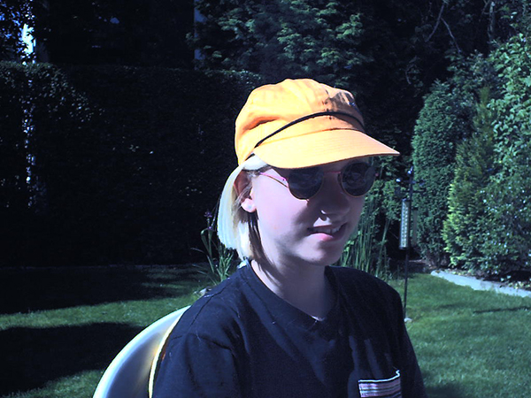

Die Entdeckung
Wir kommen aus der Tiefe des Weltalls und haben dort unser eigenes Einheimischen-System mit zwei Planeten. Einer der meist orangefarbenen Einheimischen und einer der meist grünfarbenen Feindheimischen. Wir bekämpfen uns schon seit tausenden von Jahren. Vielleicht kannst du uns Einheimischen endlich bei dem Sieg helfen. Denn die Feindheimischen wollen auch unseren Planeten übernehmen, sie sind nicht verhandlungsbereit für eine Lösung für eine gemeinsame Zukunft. Deshalb müssen wir uns wehren und versuchen sie zu bekehren. Die Einheimischen existieren schon etwas länger und haben daher ein weiter ausgebildetes Hirn und sehen solche Dinge wie Frieden als Grundwert an, dies ist bei den Feindheimischen leider noch nicht der Fall. Deshalb dürfen wir nicht alle Feindheimischen töten, wir müssen ein paar als Geiseln nehmen und sie auf unseren Planeten entführen, damit wir ihre Gehirne mit unseren hochentwickelten Maschinen weiter ausbilden können, sodass bald in unserem System nur Frieden und eine Gemeinschaft entsteht.
Vielleicht können wir das auch irgendwann auf euer Sonnensystem, speziell die Erde, übertragen. Denn auch wenn wir verschiedene Fellfarben haben, wir sind eigentlich alle gleich! Bei einem Ausflug durch das All haben wir die Erde beobachtet und festgestellt, dass ihr noch weniger entwickelt seid als wir, wir möchten euch irgendwann ein Vorbild sein. Unseren Namen haben wir übrigens von unserer Entdeckerin erhalten. Von da wo wir kommen sind wir zu Hause. Eben einfach die Einheimischen. Als Tanja uns mal auf der Erde erwischt hat, mussten wir für sie Model stehen. Wir fühlten uns von ihrer orangen Cape angezogen, deshalb landeten wir in ihrem Garten. Seither gibt es uns auch bei Euch auf der Erde als: DIE EINHEIMISCHEN!
